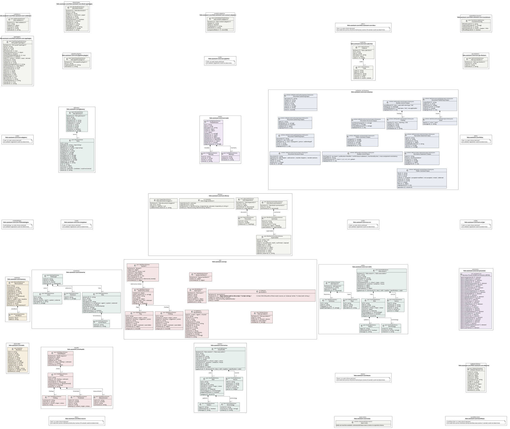
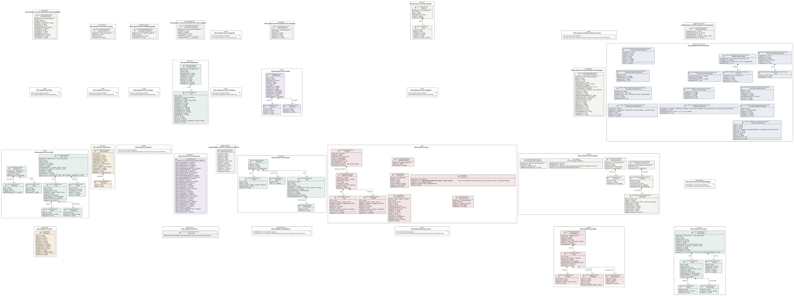

UML — folio-assistant-core
Generated by cat-harness-tools/scripts/gen-uml-overview.ts — do not edit. Every named sub-graph the folio-assistant-core instance declares, one box each, with the node schema kinds found in it.
Sources (same model): PlantUML · Mermaid · Graphviz DOT


The interactive view lays this diagram out in your browser with Graphviz, and needs JavaScript. Without it, pick Portrait or Landscape, or read the DOT source.
| sub-graph | directory | graph typologies | node schema | nodes | cohesion | in | out |
|---|---|---|---|---|---|---|---|
folio-assistant-core/folio-assistant-core-docs | folio-assistant-core/docs | docs | docs: could not determine | not measured | |||
folio-assistant-core/folio-assistant-core-translations | folio-assistant-core/translations | translation-sources | TranslationConfigSchema | not measured | |||
folio-assistant-core/folio-assistant-core-block-typologies | folio-assistant-core/block-kinds | block-kinds | BlockKindNodeSchema | not measured | |||
folio-assistant-core/folio-assistant-core-content-adapters | folio-assistant-core/content-adapters | content-adapters | ContentAdapterNodeSchema | not measured | |||
folio-assistant-core/folio-assistant-core-validators | folio-assistant-core/validators | validators | ValidatorNodeSchema | not measured | |||
folio-assistant-core/core-code-lists | folio-assistant-core/code-lists | code-list | CodeListSchema | not measured | |||
folio-assistant-core/core-qa-checkers | folio-assistant-core/qa-checkers | qa-checkers | QaCheckerNodeSchema | not measured | |||
folio-assistant-core/core-pipeline-plugins | folio-assistant-core/pipeline-plugins | pipeline-plugins | PipelinePluginNodeSchema | not measured | |||
folio-assistant-core/core-pipeline | folio-assistant-core/pipeline | code | code: could not determine | not measured | |||
folio-assistant-core/folio-assistant-core-typologies | folio-assistant-core/typologies | typologies | GraphTypologyNodeSchema | not measured | |||
folio-assistant-core/core-schemas | folio-assistant-core/schemas | schemas, cat-harness | schema: skills/document-authoring/input.schema.json; schema: skills/document-authoring/output.schema.json; schema: skills/document-publishing/input.schema.json; schema: skills/document-publishing/output.schema.json; schema: skills/document-structure/input.schema.json; schema: skills/document-structure/output.schema.json; schema: skills/normative-statements/input.schema.json; schema: skills/normative-statements/output.schema.json; schema: skills/public-comment/input.schema.json; schema: skills/public-comment/output.schema.json; schema: skills/quality-control/input.schema.json; schema: skills/quality-control/output.schema.json | 51 | 0.97 | 0 | 1 |
folio-assistant-core/folios | folio-assistant-core/folios | folio | folio: could not determine | not measured | |||
folio-assistant-core/glossary | folio-assistant-core/glossary | glossary | GlossarySchema | not measured | |||
folio-assistant-core/core-tools | folio-assistant-core/tools | tools | ToolDefinitionSchema | not measured | |||
folio-assistant-core/core-adapters | folio-assistant-core/adapters | code | code: could not determine | not measured | |||
folio-assistant-core/core-src | folio-assistant-core/src | code | code: could not determine | not measured | |||
folio-assistant-core/core-scripts | folio-assistant-core/scripts | code | code: could not determine | not measured | |||
folio-assistant-core/core-templates | folio-assistant-core/templates | code | code: could not determine | not measured | |||
folio-assistant-core/core-library | folio-assistant-core/library | library | ImagesSidecarSchema; ts: VerdictFile; BlockSummariesSidecarSchema; KeywordsFileSchema | not measured | |||
folio-assistant-core/core-methodologies | folio-assistant-core/methodologies | methodology | methodology: could not determine | not measured | |||
folio-assistant-core/core-skills | folio-assistant-core/skills | skills | VoiceProfileSchema; SkillTopicsSchema | not measured | |||
folio-assistant-core/core-processes | folio-assistant-core/processes | processes | ext: omg-bpmn-2.0 | not measured | |||
folio-assistant-core/scenarios | folio-assistant-core/scenarios | scenarios | RoleGraphSchema | not measured | |||
folio-assistant-core/qa | folio-assistant-core/test/results | qa | KgQaReportSchema; KgQaManifestSchema; BlockQaReport; ts: QaWitness; ts: QaResult; QaIndexSchema | not measured | |||
folio-assistant-core/memory | folio-assistant-core/memory | memory | MemoryNodeSchema | not measured | |||
folio-assistant-core/beans | folio-assistant-core/beans | beans | beans: could not determine | not measured | |||
folio-assistant-core/folio-assistant-core-libraries | folio-assistant-core/libraries | software-library | SoftwareLibraryKind | not measured | |||
folio-assistant-core/health | folio-assistant-core/test/health/results | health | HealthReportSchema | not measured | |||
folio-assistant-core/voices | folio-assistant-core/skills/voices | voices | VoiceProfileSchema | 34 | 0.00 | 0 | 0 |
folio-assistant-core/defs | folio-assistant-core/beans/defs | bean-defs | BeanKind | not measured | |||
folio-assistant-core/notes | folio-assistant-core/beans/notes | bean-notes | schema: schemas/sdlc/bean-note.ts | not measured | |||
folio-assistant-core/workflows | folio-assistant-core/beans/workflows | workflow-state | workflow-state: could not determine | not measured | |||
folio-assistant-core/docs-source | folio-assistant-core/docs/source | docs | docs: could not determine | not measured |
Nodes, cohesion, in and out are the detangler’s pinned measurements for the same directory (bun run cat kg:detangle; skill graph-detanglement). Not measured means the detangler does not scan that directory, not that it has no edges.
Sub-graphs
- folio-assistant-core/folio-assistant-core-docs
- folio-assistant-core/folio-assistant-core-translations
- folio-assistant-core/folio-assistant-core-block-typologies
- folio-assistant-core/folio-assistant-core-content-adapters
- folio-assistant-core/folio-assistant-core-validators
- folio-assistant-core/core-code-lists
- folio-assistant-core/core-qa-checkers
- folio-assistant-core/core-pipeline-plugins
- folio-assistant-core/core-pipeline
- folio-assistant-core/folio-assistant-core-typologies
- folio-assistant-core/core-schemas
- folio-assistant-core/folios
- folio-assistant-core/glossary
- folio-assistant-core/core-tools
- folio-assistant-core/core-adapters
- folio-assistant-core/core-src
- folio-assistant-core/core-scripts
- folio-assistant-core/core-templates
- folio-assistant-core/core-library
- folio-assistant-core/core-methodologies
- folio-assistant-core/core-skills
- folio-assistant-core/core-processes
- folio-assistant-core/scenarios
- folio-assistant-core/qa
- folio-assistant-core/memory
- folio-assistant-core/beans
- folio-assistant-core/folio-assistant-core-libraries
- folio-assistant-core/health
- folio-assistant-core/voices
- folio-assistant-core/defs
- folio-assistant-core/notes
- folio-assistant-core/workflows
- folio-assistant-core/docs-source
The same model, drawn by Mermaid
Kept so the page renders even where the PlantUML image is missing, and because Mermaid nodes carry the CSS class that colours them from uml.css.
classDiagram
direction LR
namespace folio_assistant_core__folio_assistant_core_docs {
class n_folio_assistant_core_folio_assistant_core_docs_docs["docs: no node schema"] {
<<could not determine>>
}
}
namespace folio_assistant_core__folio_assistant_core_translations {
class folio_assistant_core_folio_assistant_core_translations_TranslationConfig["TranslationConfig"] {
<<json: TranslationConfigSchema>>
defaultLocale [0..1] string
supportedLocales [0..*] string[]
translationDir [0..1] string
potGranularity [0..1] block | chapter | folio
officialRequired [0..1] boolean
}
}
namespace folio_assistant_core__folio_assistant_core_block_typologies {
class folio_assistant_core_folio_assistant_core_block_typologies_folio_block_kind_v1_folio_block_kind_v1["folio-block-kind/v1"] {
<<json: BlockKindNodeSchema>>
$schema [1] 'folio-block-kind/v1'
kind [1] string
adapter [1] string
profile [0..1] document | paper
builder [0..1] string
labelPrefix [1] string
prefixEnforced [0..1] boolean
provable [0..1] boolean
folioType [1] string
docoType [0..1] string
heading [0..1] string
headingPlural [0..1] string
indexRank [0..1] integer
rationale [0..1] string
}
}
namespace folio_assistant_core__folio_assistant_core_content_adapters {
class folio_assistant_core_folio_assistant_core_content_adapters_folio_content_adapter_v1_folio_content_adapter_v1["folio-content-adapter/v1"] {
<<json: ContentAdapterNodeSchema>>
$schema [1] 'folio-content-adapter/v1'
adapter [1] string
typed [1] boolean
companionRoles [1..*] enum(9)[]
vocabulary [0..1] string
rationale [0..1] string
}
}
namespace folio_assistant_core__folio_assistant_core_validators {
class folio_assistant_core_folio_assistant_core_validators_folio_validator_v1_folio_validator_v1["folio-validator/v1"] {
<<json: ValidatorNodeSchema>>
$schema [1] 'folio-validator/v1'
id [1] string
validates [1] object
schema [1] string
pages [0..1] string
rationale [0..1] string
}
}
namespace folio_assistant_core__core_code_lists {
class folio_assistant_core_core_code_lists_Code["Code"] {
<<json: CodeListSchema>>
code [1] string
label [1] string
definition [1] string
source [0..1] object
value [0..1] string
status [0..1] active | retired
}
class folio_assistant_core_core_code_lists_CodeList["CodeList"] {
<<json: CodeListSchema>>
$schema [1] 'folio-code-list/v1'
id [1] string
title [1] string
description [1] string
source [1] object
codes [1..*] Code[]
}
}
namespace folio_assistant_core__core_qa_checkers {
class folio_assistant_core_core_qa_checkers_folio_qa_checker_v1_folio_qa_checker_v1["folio-qa-checker/v1"] {
<<json: QaCheckerNodeSchema>>
$schema [1] 'folio-qa-checker/v1'
criterion [1] string
check [1] string
rationale [0..1] string
}
}
namespace folio_assistant_core__core_pipeline_plugins {
class folio_assistant_core_core_pipeline_plugins_folio_pipeline_plugin_v1_folio_pipeline_plugin_v1["folio-pipeline-plugin/v1"] {
<<json: PipelinePluginNodeSchema>>
$schema [1] 'folio-pipeline-plugin/v1'
slot [1] string
implementation [1] string
rationale [0..1] string
}
}
namespace folio_assistant_core__core_pipeline {
class n_folio_assistant_core_core_pipeline_code["code: no node schema"] {
<<could not determine>>
}
}
namespace folio_assistant_core__folio_assistant_core_typologies {
class folio_assistant_core_folio_assistant_core_typologies_folio_graph_typology_v1_folio_graph_typology_v1["folio-graph-typology/v1"] {
<<json: GraphTypologyNodeSchema>>
$schema [1] 'folio-graph-typology/v1'
kind [1] string
title [0..1] string
layer [0..1] 'core'
perInstance [0..1] true
newInstanceSource [0..1] object
renderable [1] boolean
shownOnPublishedPages [0..1] true
recordsWork [0..1] boolean
holds [1] content | context | state | derived
summary [1] string
schema [0..1] string
validator [0..1] string
validatorNotApplicable [0..1] string
nodeSchemas [0..1] map~object~
declarationFile [0..1] string
concernGroups [0..1] true
within [0..1] string
avatar [0..1] object
tileIcon [0..1] string
published [0..1] false
skillBearing [0..1] true
kgContent [0..1] true
description [0..1] string
renderableNote [0..1] string
anyLayer [0..1] true
rationale [0..1] string
}
}
namespace folio_assistant_core__core_schemas {
class folio_assistant_core_core_schemas_skills_document_authoring_input_schema_json_Document_Authoring_Input["Document Authoring Input"] {
<<schema: skills/document-authoring/input.schema.json>>
document [1] string
chapter [1] string
section [1] string
kind [1] enum(8)
label [1] string
title [0..1] string
uses [0..*] string[]
body [0..1] string
}
class folio_assistant_core_core_schemas_skills_document_authoring_output_schema_json_Document_Authoring_Output["Document Authoring Output"] {
<<schema: skills/document-authoring/output.schema.json>>
label [1] string
filesWritten [0..*] string[]
listedInSection [1] boolean
validation [0..1] object
stagingLinks [0..1] any
}
class folio_assistant_core_core_schemas_skills_document_publishing_input_schema_json_Document_Publishing_Input["Document Publishing Input"] {
<<schema: skills/document-publishing/input.schema.json>>
document [1] string
format [1] md | html | pdf
pdfEngine [0..1] auto | weasyprint | prince | wkhtmltopdf
css [0..1] string
toc [0..1] boolean
stagingLinks [0..1] any
}
class folio_assistant_core_core_schemas_skills_document_publishing_output_schema_json_Issue["Issue"] {
<<schema: skills/document-publishing/output.schema.json>>
level [0..1] error | warn
message [0..1] string
}
class folio_assistant_core_core_schemas_skills_document_publishing_output_schema_json_Document_Publishing_Output["Document Publishing Output"] {
<<schema: skills/document-publishing/output.schema.json>>
outputPath [1] string
engine [0..1] string
blockCount [1] integer
chapterCount [0..1] integer
issues [0..*] Issue[]
stagingLinks [0..1] any
}
class folio_assistant_core_core_schemas_skills_document_structure_input_schema_json_Document_Structure_Input["Document Structure Input"] {
<<schema: skills/document-structure/input.schema.json>>
document [1] string
operation [1] add-chapter | add-section | reorder-chapters | reorder-sections
chapter [0..1] string
title [0..1] string
position [0..1] integer
order [0..*] string[]
}
class folio_assistant_core_core_schemas_skills_document_structure_output_schema_json_Document_Structure_Output["Document Structure Output"] {
<<schema: skills/document-structure/output.schema.json>>
manifestsChanged [0..*] string[]
chapters [0..*] string[]
forwardReferences [0..*] string[]
stagingLinks [0..1] any
}
class folio_assistant_core_core_schemas_skills_normative_statements_input_schema_json_Normative_Statement_Input["Normative Statement Input"] {
<<schema: skills/normative-statements/input.schema.json>>
label [1] string
title [0..1] string
statement [1] string
strength [0..1] object
publishedNumber [0..1] string
uses [0..*] string[]
about [0..*] string[]
}
class folio_assistant_core_core_schemas_skills_normative_statements_output_schema_json_Normative_Statement_Output["Normative Statement Output"] {
<<schema: skills/normative-statements/output.schema.json>>
label [1] string
kind [1] 'recommendation'
anchor [0..1] string
citedBy [0..*] string[]
strength [0..1] object
stagingLinks [0..1] any
}
class folio_assistant_core_core_schemas_skills_public_comment_input_schema_json_Public_Comment_Input["Public Comment Input"] {
<<schema: skills/public-comment/input.schema.json>>
operation [1] enum(13)
file [0..1] string
ref [0..1] string
to [0..1] string
code [0..1] accepted | accepted-modified | not-accepted | noted | deferred
reason [0..1] string
branch [0..1] string
pr [0..1] integer
filter [0..1] object
stagingLinks [0..1] any
}
class folio_assistant_core_core_schemas_skills_public_comment_output_schema_json_Public_Comment_Output["Public Comment Output"] {
<<schema: skills/public-comment/output.schema.json>>
changed [0..*] string[]
unplaced [0..*] string[]
refused [0..*] string[]
comments [0..*] any[]
stagingLinks [0..1] any
}
class folio_assistant_core_core_schemas_skills_quality_control_input_schema_json_Quality_Control_Input["Quality Control Input"] {
<<schema: skills/quality-control/input.schema.json>>
checkType [1] qa-report | publication-checklist | conformance-validation | functionality-test | cross-component-consistency
targetPath [1] string
checklistSections [0..*] list~L1 | L2 | L3 | L4 | global~
stagingLinks [0..1] any
}
class folio_assistant_core_core_schemas_skills_quality_control_output_schema_json_Finding["Finding"] {
<<schema: skills/quality-control/output.schema.json>>
severity [1] error | warning | info
category [1] string
message [1] string
location [0..1] string
remediation [0..1] string
}
class folio_assistant_core_core_schemas_skills_quality_control_output_schema_json_Quality_Control_Output["Quality Control Output"] {
<<schema: skills/quality-control/output.schema.json>>
overallResult [1] pass | pass-with-warnings | fail
findings [0..*] Finding[]
checklistResults [0..1] map~pass | fail | not-applicable~
stagingLinks [0..1] any
}
}
namespace folio_assistant_core__folios {
class n_folio_assistant_core_folios_folio["folio: no node schema"] {
<<could not determine>>
}
}
namespace folio_assistant_core__glossary {
class folio_assistant_core_glossary_folio_glossary_v1_Term["Term"] {
<<json: GlossarySchema>>
id [1] string
prefLabel [1] string | map~string~
altLabel [0..*] string[]
definition [0..1] string | map~string~
notation [0..1] string
scopeNote [0..1] string
broader [0..*] string[]
related [0..*] string[]
exactMatch [0..*] string[]
closeMatch [0..*] string[]
broadMatch [0..*] string[]
narrowMatch [0..*] string[]
requires [0..*] string[]
isDefinedBy [0..1] string
iri [0..1] string
focus [0..1] object
source [0..1] string
status [1] authored | candidate | could-not-extract
reason [0..1] string
}
class folio_assistant_core_glossary_folio_glossary_v1_folio_glossary_v1["folio-glossary/v1"] {
<<json: GlossarySchema>>
$schema [1] 'folio-glossary/v1'
id [1] string
title [1] string
description [0..1] string
hasVersion [0..1] string
modified [0..1] string
source [0..1] string
license [0..1] string
terms [0..*] Term[]
ordered [0..1] boolean
members [0..*] string[]
}
}
namespace folio_assistant_core__core_tools {
class folio_assistant_core_core_tools_Remedy["Remedy"] {
<<json: ToolDefinitionSchema>>
host [1] string
error [0..1] string
tool [0..1] string
none [0..1] string
}
class folio_assistant_core_core_tools_Maintain["Maintain"] {
<<json: ToolDefinitionSchema>>
source [1] string
artefact [1] string
format [0..1] string
}
class folio_assistant_core_core_tools_ToolDefinition["ToolDefinition"] {
<<json: ToolDefinitionSchema>>
id [1] string
title [1] string
description [1] string
install [1] object
invoke [1] object
io [1] object
satisfies [1..*] string[]
selection [0..1] object
requires [0..1] object
remedies [0..*] Remedy[]
maintains [0..*] Maintain[]
downstream [0..1] object
renders [0..*] string[]
subprocesses [0..*] string[]
}
}
namespace folio_assistant_core__core_adapters {
class n_folio_assistant_core_core_adapters_code["code: no node schema"] {
<<could not determine>>
}
}
namespace folio_assistant_core__core_src {
class n_folio_assistant_core_core_src_code["code: no node schema"] {
<<could not determine>>
}
}
namespace folio_assistant_core__core_scripts {
class n_folio_assistant_core_core_scripts_code["code: no node schema"] {
<<could not determine>>
}
}
namespace folio_assistant_core__core_templates {
class n_folio_assistant_core_core_templates_code["code: no node schema"] {
<<could not determine>>
}
}
namespace folio_assistant_core__core_library {
class folio_assistant_core_core_library_folio_document_images_v1_folio_document_images_v1["folio-document-images/v1"] {
<<json: ImagesSidecarSchema>>
$schema [1] 'folio-document-images/v1'
doc_id [1] string
images [1] object[] | null
undetermined_reason [0..1] string
}
class folio_assistant_core_core_library_folio_image_verdicts_v1["folio-image-verdicts/v1"] {
<<ts: VerdictFile>>
inspected_by [1] unknown
inspected_at [1] string
attribution [0..1] Record~string, inspected_by: unknown; inspected_at: string ~
verdicts [1] Record~string, Record~string, Verdict~~
}
class folio_assistant_core_core_library_folio_block_summaries_v1_Superseded["Superseded"] {
<<json: BlockSummariesSidecarSchema>>
text [1] string | null
lang [0..1] string
state [1] not-authored | draft | confirmed | rejected
drafted_by [0..1] object
drafted_at [0..1] string
confirmed_by [0..1] object
confirmed_at [0..1] string
rejected_by [0..1] object
rejected_at [0..1] string
rejection_reason [0..1] string
}
class folio_assistant_core_core_library_folio_block_summaries_v1_Summary["Summary"] {
<<json: BlockSummariesSidecarSchema>>
block [1] string
source [1] string
source_hash [1] string
narrative [1] object | object[]
superseded [0..*] Superseded[]
}
class folio_assistant_core_core_library_folio_block_summaries_v1_folio_block_summaries_v1["folio-block-summaries/v1"] {
<<json: BlockSummariesSidecarSchema>>
$schema [1] 'folio-block-summaries/v1'
entry [1] string
summaries [0..*] Summary[]
}
class folio_assistant_core_core_library_folio_keywords_v1_Document["Document"] {
<<json: KeywordsFileSchema>>
term [1] string
score [1] number
evidence [0..*] heading[]
}
class folio_assistant_core_core_library_folio_keywords_v1_folio_keywords_v1["folio-keywords/v1"] {
<<json: KeywordsFileSchema>>
$schema [1] 'folio-keywords/v1'
entry [1] string
corpus [1] object
document [0..*] Document[]
sections [1] map~object[]~
}
}
namespace folio_assistant_core__core_methodologies {
class n_folio_assistant_core_core_methodologies_methodology["methodology: no node schema"] {
<<could not determine>>
}
}
namespace folio_assistant_core__core_skills {
class folio_assistant_core_core_skills_folio_voice_v1_Source["Source"] {
<<json: VoiceProfileSchema>>
title [1] string
instance [0..1] string
libraryId [0..1] string
path [0..1] string
url [0..1] string~uri~
year [0..1] integer
}
class folio_assistant_core_core_skills_folio_voice_v1_Pattern["Pattern"] {
<<json: VoiceProfileSchema>>
regex [1] string
caseSensitive [0..1] boolean
message [1] string
}
class folio_assistant_core_core_skills_folio_voice_v1_Terminology["Terminology"] {
<<json: VoiceProfileSchema>>
correct [1] string
incorrect [1] string | string[]
context [0..1] string
}
class folio_assistant_core_core_skills_folio_voice_v1_Rule["Rule"] {
<<json: VoiceProfileSchema>>
id [1] string
title [1] string
description [1] string
category [1] enum(13)
severity [1] critical | major | minor
source [1] object
patterns [0..*] Pattern[]
terminology [0..*] Terminology[]
judgementOnly [0..1] boolean
}
class folio_assistant_core_core_skills_folio_voice_v1_folio_voice_v1["folio-voice/v1"] {
<<json: VoiceProfileSchema>>
$schema [1] 'folio-voice/v1' | 'folio-voice-skill/v1'
id [1] string
title [1] string
description [1] string
sources [1..*] Source[]
rules [1..*] Rule[]
overlaySeverity [0..1] critical | major | minor
appliesTo [0..*] list~enum(17) | docs | skill | readme | specification | code~
provenance [1] assertion | evidence | house
extends [0..1] object
activeIn [0..1] object
superseded [0..1] object
}
class folio_assistant_core_core_skills_skill_topics_v1_Topic["Topic"] {
<<json: SkillTopicsSchema>>
id [1] string
path [1] string
title [1] string
description [1] string
}
class folio_assistant_core_core_skills_skill_topics_v1_Directory["Directory"] {
<<json: SkillTopicsSchema>>
id [1] string
path [1] string
subgraph [1] true
graphTypologies [1..*] string[]
}
class folio_assistant_core_core_skills_skill_topics_v1_skill_topics_v1["skill-topics/v1"] {
<<json: SkillTopicsSchema>>
$schema [1] 'skill-topics/v1'
_comment [0..1] string
topics [0..*] Topic[]
directories [0..*] Directory[]
}
}
namespace folio_assistant_core__core_processes {
class folio_assistant_core_core_processes_omg_bpmn_2_0["Business Process Model and Notation (BPMN)"] {
<<ext: omg-bpmn-2.0>>
bpmn:assignment [0..*] element
bpmn:callActivity [0..*] element
bpmn:collaboration [0..*] element
bpmn:dataInput [0..*] element
bpmn:dataInputAssociation [0..*] element
bpmn:dataInputRefs [0..*] element
bpmn:definitions [0..*] element
bpmn:documentation [0..*] element
bpmn:endEvent [0..*] element
bpmn:exclusiveGateway [0..*] element
bpmn:extensionElements [0..*] element
bpmn:flowNodeRef [0..*] element
bpmn:from [0..*] element
bpmn:globalScriptTask [0..*] element
bpmn:globalTask [0..*] element
bpmn:import [0..*] element
bpmn:incoming [0..*] element
bpmn:inputSet [0..*] element
bpmn:ioSpecification [0..*] element
bpmn:lane [0..*] element
bpmn:laneSet [0..*] element
bpmn:outgoing [0..*] element
bpmn:outputSet [0..*] element
bpmn:parallelGateway [0..*] element
bpmn:participant [0..*] element
bpmn:process [0..*] element
bpmn:resource [0..*] element
bpmn:sequenceFlow [0..*] element
bpmn:serviceTask [0..*] element
bpmn:startEvent [0..*] element
bpmn:targetRef [0..*] element
bpmn:task [0..*] element
bpmn:timerEventDefinition [0..*] element
bpmn:to [0..*] element
bpmn:userTask [0..*] element
}
}
namespace folio_assistant_core__scenarios {
class folio_assistant_core_scenarios_FormerName["FormerName"] {
<<json: RoleGraphSchema>>
name [1] string
retiredOn [1] string
}
class folio_assistant_core_scenarios_Role["Role"] {
<<json: RoleGraphSchema>>
persona [0..1] string
id [1] string
title [1] string
description [1] string
actorKinds [1..*] list~person | agent | system | external~
otherNames [0..*] string[]
formerNames [0..*] FormerName[]
skills [0..*] string[]
inherits [0..*] string[]
judgementOnly [0..1] boolean
requiredCapabilities [0..1] object
}
class folio_assistant_core_scenarios_Actor["Actor"] {
<<json: RoleGraphSchema>>
id [1] string
title [1] string
kind [1] person | agent | system | external
description [0..1] string
roles [0..*] string[]
}
class folio_assistant_core_scenarios_Extension["Extension"] {
<<json: RoleGraphSchema>>
role [1] string
skills [1..*] string[]
}
class folio_assistant_core_scenarios_RoleGraph["RoleGraph"] {
<<json: RoleGraphSchema>>
name [1] string
roles [0..*] Role[]
actors [0..*] Actor[]
extensions [0..*] Extension[]
}
}
namespace folio_assistant_core__qa {
class folio_assistant_core_qa_kg_qa_v1_Flag["Flag"] {
<<json: KgQaReportSchema>>
id [1] string
category [0..1] enum(8)
severity [1] critical | major | minor
weight [1] blocking | suggestion | praise
where [1] string
evidence [0..1] string
detail [0..1] string
status [0..1] open | resolved | overridden
resolution [0..1] object
}
class folio_assistant_core_qa_kg_qa_v1_Finding["Finding"] {
<<json: KgQaReportSchema>>
id [1] string
category [0..1] enum(8)
severity [1] critical | major | minor
weight [1] blocking | suggestion | praise
where [1] string
evidence [0..1] string
detail [0..1] string
status [0..1] open | resolved | overridden
resolution [0..1] object
}
class folio_assistant_core_qa_kg_qa_v1_Adversarial_review["Adversarial_review"] {
<<json: KgQaReportSchema>>
reviewer [1] object
author_sessions [0..*] string[]
skill_hash [1] string
at [1] string
coverage [1] object
result [1] pass | fail | unknown
flags [0..*] Flag[]
findings [0..*] Finding[]
}
class folio_assistant_core_qa_kg_qa_v1_kg_qa_v1["kg-qa/v1"] {
<<json: KgQaReportSchema>>
$schema [1] 'kg-qa/v1'
subject [1] object
source_hash [1] string | null
criteria [1] map~object~
totals [1] map~number~
pair_attestations [0..1] any
voice_reviews [0..1] any
adversarial_reviews [0..*] Adversarial_review[]
runContext [0..1] object
}
class folio_assistant_core_qa_kg_qa_manifest_v1_kg_qa_manifest_v1["kg-qa-manifest/v1"] {
<<json: KgQaManifestSchema>>
$schema [1] 'kg-qa-manifest/v1'
auditor [1] object
runContext [0..1] object
}
class folio_assistant_core_qa_block_qa_v1_block_qa_v1["block-qa/v1"] {
<<json: BlockQaReport>>
$schema [1] 'block-qa/v1'
label [1] string
kind [1] string
paths [1] object
source_hashes [1] object
criteria [1] map~object[]~
updated_at [1] string
}
class folio_assistant_core_qa_qa_witness_v1["qa-witness/v1"] {
<<ts: QaWitness>>
kind [1] 'script' | 'agent' | 'human'
id [1] string
version [0..1] string
at [0..1] string
sha [0..1] string
scriptHash [0..1] string
scriptCommitSha [0..1] string
depsHash [0..1] string
model [0..1] string
session [0..1] string
skill [0..1] string
method [0..1] string
freshness [1] QaFreshness
changed [0..1] string[]
notCompared [0..1] string[]
notes [0..1] string
}
class folio_assistant_core_qa_qa_results_v1["qa-results/v1"] {
<<ts: QaResult>>
$schema [1] 'qa-results/v1'
producer [1] /** Repo-relative path to the script. */ script: string; /** 12-char SHA-256 prefix of that script's source, as `script-qa` writes. */ script_hash: string;
subject [1] kind: string; id: string
families [1] Record~string, QaResultFamily~
total [1] number
}
class folio_assistant_core_qa_folio_qa_index_v1_folio_qa_index_v1["folio-qa-index/v1"] {
<<json: QaIndexSchema>>
$schema [1] 'folio-qa-index/v1'
page [1] string
corpus [0..1] present | absent
badges [1] map~object~
unswept [0..*] string[]
}
}
namespace folio_assistant_core__memory {
class folio_assistant_core_memory_AlsoAbout["AlsoAbout"] {
<<json: MemoryNodeSchema>>
kind [1] 'block'
label [1] string
}
class folio_assistant_core_memory_MemoryNode["MemoryNode"] {
<<json: MemoryNodeSchema>>
id [1] string
summary [1] string
comment [0..1] string
createdAt [1] string
updatedAt [0..1] string
targetLabel [0..1] string
anchor [0..1] object
alsoAbout [0..*] AlsoAbout[]
tags [0..1] object
label [1] stable | trap | baseline
measured [0..1] object
archived [0..1] boolean
detail [0..1] string
$schema [1] 'folio-memory/v1'
}
}
namespace folio_assistant_core__beans {
class n_folio_assistant_core_beans_beans["beans: no node schema"] {
<<could not determine>>
}
}
namespace folio_assistant_core__folio_assistant_core_libraries {
class folio_assistant_core_folio_assistant_core_libraries_software_library_1_0_0_software_library_1_0_0["software-library/1.0.0"] {
<<json: SoftwareLibraryKind>>
name [1] string
version [1] string
digest [1] object
source [1] object
licence [1] string
licenceSource [1] string
range [0..1] string
dev [0..1] boolean
vendored [0..1] object
layer [0..1] string
usedBy [0..*] string[]
shim [0..1] string
$schema [1] string
}
}
namespace folio_assistant_core__health {
class folio_assistant_core_health_Threshold["Threshold"] {
<<json: HealthReportSchema>>
metric [1] string
value [1] number
unit [1] string
basis [1] string
severity [1] critical | major | minor
}
class folio_assistant_core_health_Measurement["Measurement"] {
<<json: HealthReportSchema>>
metric [1] string
value [1] number
unit [1] string
command [1] string
}
class folio_assistant_core_health_Finding["Finding"] {
<<json: HealthReportSchema>>
summary [1] string
metric [0..1] string
severity [1] critical | major | minor
action [1] string
}
class folio_assistant_core_health_Check["Check"] {
<<json: HealthReportSchema>>
id [1] string
state [1] ok | finding | unknown
summary [1] string
thresholds [0..*] Threshold[]
measurements [0..*] Measurement[]
findings [0..*] Finding[]
reason [0..1] string
}
class folio_assistant_core_health_HealthReport["HealthReport"] {
<<json: HealthReportSchema>>
$schema [1] 'health-report/v1'
producer [1] object
subject [1] object
updated_at [1] string
verdict [1] clean | findings | unknown
checks [1..*] Check[]
runContext [0..1] object
}
}
namespace folio_assistant_core__voices {
class folio_assistant_core_voices_Source["Source"] {
<<json: VoiceProfileSchema>>
title [1] string
instance [0..1] string
libraryId [0..1] string
path [0..1] string
url [0..1] string~uri~
year [0..1] integer
}
class folio_assistant_core_voices_Pattern["Pattern"] {
<<json: VoiceProfileSchema>>
regex [1] string
caseSensitive [0..1] boolean
message [1] string
}
class folio_assistant_core_voices_Terminology["Terminology"] {
<<json: VoiceProfileSchema>>
correct [1] string
incorrect [1] string | string[]
context [0..1] string
}
class folio_assistant_core_voices_Rule["Rule"] {
<<json: VoiceProfileSchema>>
id [1] string
title [1] string
description [1] string
category [1] enum(13)
severity [1] critical | major | minor
source [1] object
patterns [0..*] Pattern[]
terminology [0..*] Terminology[]
judgementOnly [0..1] boolean
}
class folio_assistant_core_voices_VoiceProfile["VoiceProfile"] {
<<json: VoiceProfileSchema>>
$schema [1] 'folio-voice/v1' | 'folio-voice-skill/v1'
id [1] string
title [1] string
description [1] string
sources [1..*] Source[]
rules [1..*] Rule[]
overlaySeverity [0..1] critical | major | minor
appliesTo [0..*] list~enum(17) | docs | skill | readme | specification | code~
provenance [1] assertion | evidence | house
extends [0..1] object
activeIn [0..1] object
superseded [0..1] object
}
}
namespace folio_assistant_core__defs {
class folio_assistant_core_defs_BeanKind["BeanKind"] {
<<json: BeanKind>>
id [0..1] string
title [0..1] string
status [0..1] string
type [0..1] string
priority [0..1] string
parent [0..1] string
blocking [0..*] string[]
blocked_by [0..*] string[]
created_at [0..1] string
updated_at [0..1] string
tags [0..*] string[]
issue [0..1] integer | string
targets [0..1] string[] | string
$schema [1] string
}
}
namespace folio_assistant_core__notes {
class folio_assistant_core_notes_bean_notes_shape["bean-notes"] {
<<schema: schemas/sdlc/bean-note.ts>>
fields not machine-readable: schemas/sdlc/bean-note.ts names no exported schema
}
}
namespace folio_assistant_core__workflows {
class n_folio_assistant_core_workflows_workflow_state["workflow-state: no node schema"] {
<<could not determine>>
}
}
namespace folio_assistant_core__docs_source {
class n_folio_assistant_core_docs_source_docs["docs: no node schema"] {
<<could not determine>>
}
}
cssClass "n_folio_assistant_core_folio_assistant_core_docs_docs" fa_uml_kind_docs
cssClass "n_folio_assistant_core_folio_assistant_core_docs_docs" fa_uml_undetermined
cssClass "folio_assistant_core_folio_assistant_core_translations_TranslationConfig" fa_uml_kind_translation_sources
cssClass "folio_assistant_core_folio_assistant_core_block_typologies_folio_block_kind_v1_folio_block_kind_v1" fa_uml_kind_block_kinds
cssClass "folio_assistant_core_folio_assistant_core_content_adapters_folio_content_adapter_v1_folio_content_adapter_v1" fa_uml_kind_content_adapters
cssClass "folio_assistant_core_folio_assistant_core_validators_folio_validator_v1_folio_validator_v1" fa_uml_kind_validators
folio_assistant_core_core_code_lists_CodeList *-- "1..*" folio_assistant_core_core_code_lists_Code : codes
cssClass "folio_assistant_core_core_code_lists_Code" fa_uml_kind_code_list
cssClass "folio_assistant_core_core_code_lists_CodeList" fa_uml_kind_code_list
cssClass "folio_assistant_core_core_qa_checkers_folio_qa_checker_v1_folio_qa_checker_v1" fa_uml_kind_qa_checkers
cssClass "folio_assistant_core_core_pipeline_plugins_folio_pipeline_plugin_v1_folio_pipeline_plugin_v1" fa_uml_kind_pipeline_plugins
cssClass "n_folio_assistant_core_core_pipeline_code" fa_uml_kind_code
cssClass "n_folio_assistant_core_core_pipeline_code" fa_uml_undetermined
cssClass "folio_assistant_core_folio_assistant_core_typologies_folio_graph_typology_v1_folio_graph_typology_v1" fa_uml_kind_typologies
folio_assistant_core_core_schemas_skills_document_publishing_output_schema_json_Document_Publishing_Output *-- "0..*" folio_assistant_core_core_schemas_skills_document_publishing_output_schema_json_Issue : issues
folio_assistant_core_core_schemas_skills_quality_control_output_schema_json_Quality_Control_Output *-- "0..*" folio_assistant_core_core_schemas_skills_quality_control_output_schema_json_Finding : findings
cssClass "folio_assistant_core_core_schemas_skills_document_authoring_input_schema_json_Document_Authoring_Input" fa_uml_kind_schemas
cssClass "folio_assistant_core_core_schemas_skills_document_authoring_output_schema_json_Document_Authoring_Output" fa_uml_kind_schemas
cssClass "folio_assistant_core_core_schemas_skills_document_publishing_input_schema_json_Document_Publishing_Input" fa_uml_kind_schemas
cssClass "folio_assistant_core_core_schemas_skills_document_publishing_output_schema_json_Issue" fa_uml_kind_schemas
cssClass "folio_assistant_core_core_schemas_skills_document_publishing_output_schema_json_Document_Publishing_Output" fa_uml_kind_schemas
cssClass "folio_assistant_core_core_schemas_skills_document_structure_input_schema_json_Document_Structure_Input" fa_uml_kind_schemas
cssClass "folio_assistant_core_core_schemas_skills_document_structure_output_schema_json_Document_Structure_Output" fa_uml_kind_schemas
cssClass "folio_assistant_core_core_schemas_skills_normative_statements_input_schema_json_Normative_Statement_Input" fa_uml_kind_schemas
cssClass "folio_assistant_core_core_schemas_skills_normative_statements_output_schema_json_Normative_Statement_Output" fa_uml_kind_schemas
cssClass "folio_assistant_core_core_schemas_skills_public_comment_input_schema_json_Public_Comment_Input" fa_uml_kind_schemas
cssClass "folio_assistant_core_core_schemas_skills_public_comment_output_schema_json_Public_Comment_Output" fa_uml_kind_schemas
cssClass "folio_assistant_core_core_schemas_skills_quality_control_input_schema_json_Quality_Control_Input" fa_uml_kind_schemas
cssClass "folio_assistant_core_core_schemas_skills_quality_control_output_schema_json_Finding" fa_uml_kind_schemas
cssClass "folio_assistant_core_core_schemas_skills_quality_control_output_schema_json_Quality_Control_Output" fa_uml_kind_schemas
cssClass "n_folio_assistant_core_folios_folio" fa_uml_kind_folio
cssClass "n_folio_assistant_core_folios_folio" fa_uml_undetermined
folio_assistant_core_glossary_folio_glossary_v1_folio_glossary_v1 *-- "0..*" folio_assistant_core_glossary_folio_glossary_v1_Term : terms
cssClass "folio_assistant_core_glossary_folio_glossary_v1_Term" fa_uml_kind_glossary
cssClass "folio_assistant_core_glossary_folio_glossary_v1_folio_glossary_v1" fa_uml_kind_glossary
folio_assistant_core_core_tools_ToolDefinition *-- "0..*" folio_assistant_core_core_tools_Remedy : remedies
folio_assistant_core_core_tools_ToolDefinition *-- "0..*" folio_assistant_core_core_tools_Maintain : maintains
cssClass "folio_assistant_core_core_tools_Remedy" fa_uml_kind_tools
cssClass "folio_assistant_core_core_tools_Maintain" fa_uml_kind_tools
cssClass "folio_assistant_core_core_tools_ToolDefinition" fa_uml_kind_tools
cssClass "n_folio_assistant_core_core_adapters_code" fa_uml_kind_code
cssClass "n_folio_assistant_core_core_adapters_code" fa_uml_undetermined
cssClass "n_folio_assistant_core_core_src_code" fa_uml_kind_code
cssClass "n_folio_assistant_core_core_src_code" fa_uml_undetermined
cssClass "n_folio_assistant_core_core_scripts_code" fa_uml_kind_code
cssClass "n_folio_assistant_core_core_scripts_code" fa_uml_undetermined
cssClass "n_folio_assistant_core_core_templates_code" fa_uml_kind_code
cssClass "n_folio_assistant_core_core_templates_code" fa_uml_undetermined
folio_assistant_core_core_library_folio_block_summaries_v1_Summary *-- "0..*" folio_assistant_core_core_library_folio_block_summaries_v1_Superseded : superseded
folio_assistant_core_core_library_folio_block_summaries_v1_folio_block_summaries_v1 *-- "0..*" folio_assistant_core_core_library_folio_block_summaries_v1_Summary : summaries
folio_assistant_core_core_library_folio_keywords_v1_folio_keywords_v1 *-- "0..*" folio_assistant_core_core_library_folio_keywords_v1_Document : document
cssClass "folio_assistant_core_core_library_folio_document_images_v1_folio_document_images_v1" fa_uml_kind_library
cssClass "folio_assistant_core_core_library_folio_image_verdicts_v1" fa_uml_kind_library
cssClass "folio_assistant_core_core_library_folio_block_summaries_v1_Superseded" fa_uml_kind_library
cssClass "folio_assistant_core_core_library_folio_block_summaries_v1_Summary" fa_uml_kind_library
cssClass "folio_assistant_core_core_library_folio_block_summaries_v1_folio_block_summaries_v1" fa_uml_kind_library
cssClass "folio_assistant_core_core_library_folio_keywords_v1_Document" fa_uml_kind_library
cssClass "folio_assistant_core_core_library_folio_keywords_v1_folio_keywords_v1" fa_uml_kind_library
cssClass "n_folio_assistant_core_core_methodologies_methodology" fa_uml_kind_methodology
cssClass "n_folio_assistant_core_core_methodologies_methodology" fa_uml_undetermined
folio_assistant_core_core_skills_folio_voice_v1_folio_voice_v1 *-- "1..*" folio_assistant_core_core_skills_folio_voice_v1_Source : sources
folio_assistant_core_core_skills_folio_voice_v1_Rule *-- "0..*" folio_assistant_core_core_skills_folio_voice_v1_Pattern : patterns
folio_assistant_core_core_skills_folio_voice_v1_Rule *-- "0..*" folio_assistant_core_core_skills_folio_voice_v1_Terminology : terminology
folio_assistant_core_core_skills_folio_voice_v1_folio_voice_v1 *-- "1..*" folio_assistant_core_core_skills_folio_voice_v1_Rule : rules
folio_assistant_core_core_skills_skill_topics_v1_skill_topics_v1 *-- "0..*" folio_assistant_core_core_skills_skill_topics_v1_Topic : topics
folio_assistant_core_core_skills_skill_topics_v1_skill_topics_v1 *-- "0..*" folio_assistant_core_core_skills_skill_topics_v1_Directory : directories
cssClass "folio_assistant_core_core_skills_folio_voice_v1_Source" fa_uml_kind_skills
cssClass "folio_assistant_core_core_skills_folio_voice_v1_Pattern" fa_uml_kind_skills
cssClass "folio_assistant_core_core_skills_folio_voice_v1_Terminology" fa_uml_kind_skills
cssClass "folio_assistant_core_core_skills_folio_voice_v1_Rule" fa_uml_kind_skills
cssClass "folio_assistant_core_core_skills_folio_voice_v1_folio_voice_v1" fa_uml_kind_skills
cssClass "folio_assistant_core_core_skills_skill_topics_v1_Topic" fa_uml_kind_skills
cssClass "folio_assistant_core_core_skills_skill_topics_v1_Directory" fa_uml_kind_skills
cssClass "folio_assistant_core_core_skills_skill_topics_v1_skill_topics_v1" fa_uml_kind_skills
cssClass "folio_assistant_core_core_processes_omg_bpmn_2_0" fa_uml_kind_processes
folio_assistant_core_scenarios_Role *-- "0..*" folio_assistant_core_scenarios_FormerName : formerNames
folio_assistant_core_scenarios_RoleGraph *-- "0..*" folio_assistant_core_scenarios_Role : roles
folio_assistant_core_scenarios_RoleGraph *-- "0..*" folio_assistant_core_scenarios_Actor : actors
folio_assistant_core_scenarios_RoleGraph *-- "0..*" folio_assistant_core_scenarios_Extension : extensions
cssClass "folio_assistant_core_scenarios_FormerName" fa_uml_kind_scenarios
cssClass "folio_assistant_core_scenarios_Role" fa_uml_kind_scenarios
cssClass "folio_assistant_core_scenarios_Actor" fa_uml_kind_scenarios
cssClass "folio_assistant_core_scenarios_Extension" fa_uml_kind_scenarios
cssClass "folio_assistant_core_scenarios_RoleGraph" fa_uml_kind_scenarios
folio_assistant_core_qa_kg_qa_v1_Adversarial_review *-- "0..*" folio_assistant_core_qa_kg_qa_v1_Flag : flags
folio_assistant_core_qa_kg_qa_v1_Adversarial_review *-- "0..*" folio_assistant_core_qa_kg_qa_v1_Finding : findings
folio_assistant_core_qa_kg_qa_v1_kg_qa_v1 *-- "0..*" folio_assistant_core_qa_kg_qa_v1_Adversarial_review : adversarial_reviews
cssClass "folio_assistant_core_qa_kg_qa_v1_Flag" fa_uml_kind_qa
cssClass "folio_assistant_core_qa_kg_qa_v1_Finding" fa_uml_kind_qa
cssClass "folio_assistant_core_qa_kg_qa_v1_Adversarial_review" fa_uml_kind_qa
cssClass "folio_assistant_core_qa_kg_qa_v1_kg_qa_v1" fa_uml_kind_qa
cssClass "folio_assistant_core_qa_kg_qa_manifest_v1_kg_qa_manifest_v1" fa_uml_kind_qa
cssClass "folio_assistant_core_qa_block_qa_v1_block_qa_v1" fa_uml_kind_qa
cssClass "folio_assistant_core_qa_qa_witness_v1" fa_uml_kind_qa
cssClass "folio_assistant_core_qa_qa_results_v1" fa_uml_kind_qa
cssClass "folio_assistant_core_qa_folio_qa_index_v1_folio_qa_index_v1" fa_uml_kind_qa
folio_assistant_core_memory_MemoryNode *-- "0..*" folio_assistant_core_memory_AlsoAbout : alsoAbout
cssClass "folio_assistant_core_memory_AlsoAbout" fa_uml_kind_memory
cssClass "folio_assistant_core_memory_MemoryNode" fa_uml_kind_memory
cssClass "n_folio_assistant_core_beans_beans" fa_uml_kind_beans
cssClass "n_folio_assistant_core_beans_beans" fa_uml_undetermined
cssClass "folio_assistant_core_folio_assistant_core_libraries_software_library_1_0_0_software_library_1_0_0" fa_uml_kind_software_library
folio_assistant_core_health_Check *-- "0..*" folio_assistant_core_health_Threshold : thresholds
folio_assistant_core_health_Check *-- "0..*" folio_assistant_core_health_Measurement : measurements
folio_assistant_core_health_Check *-- "0..*" folio_assistant_core_health_Finding : findings
folio_assistant_core_health_HealthReport *-- "1..*" folio_assistant_core_health_Check : checks
cssClass "folio_assistant_core_health_Threshold" fa_uml_kind_health
cssClass "folio_assistant_core_health_Measurement" fa_uml_kind_health
cssClass "folio_assistant_core_health_Finding" fa_uml_kind_health
cssClass "folio_assistant_core_health_Check" fa_uml_kind_health
cssClass "folio_assistant_core_health_HealthReport" fa_uml_kind_health
folio_assistant_core_voices_VoiceProfile *-- "1..*" folio_assistant_core_voices_Source : sources
folio_assistant_core_voices_Rule *-- "0..*" folio_assistant_core_voices_Pattern : patterns
folio_assistant_core_voices_Rule *-- "0..*" folio_assistant_core_voices_Terminology : terminology
folio_assistant_core_voices_VoiceProfile *-- "1..*" folio_assistant_core_voices_Rule : rules
cssClass "folio_assistant_core_voices_Source" fa_uml_kind_voices
cssClass "folio_assistant_core_voices_Pattern" fa_uml_kind_voices
cssClass "folio_assistant_core_voices_Terminology" fa_uml_kind_voices
cssClass "folio_assistant_core_voices_Rule" fa_uml_kind_voices
cssClass "folio_assistant_core_voices_VoiceProfile" fa_uml_kind_voices
cssClass "folio_assistant_core_defs_BeanKind" fa_uml_kind_bean_defs
cssClass "folio_assistant_core_notes_bean_notes_shape" fa_uml_kind_bean_notes
cssClass "n_folio_assistant_core_workflows_workflow_state" fa_uml_kind_workflow_state
cssClass "n_folio_assistant_core_workflows_workflow_state" fa_uml_undetermined
cssClass "n_folio_assistant_core_docs_source_docs" fa_uml_kind_docs
cssClass "n_folio_assistant_core_docs_source_docs" fa_uml_undetermined